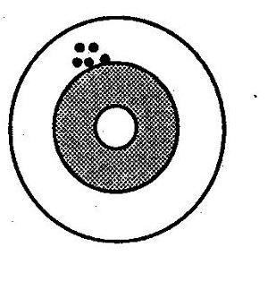

Study Precision
Good Precision - Good Validity
Consider that at the center of the target is the truth and that each shot at the target represents a study you conduct -- a sample of subjects whom you select -- to find the right answer. Here we show five different studies (samples) of the same study design i.e. 5 different samples of the source population. Of course, what you want is this - good validity and good precision.
We say that this is good precision because the differences between the individual samples is very close; there is very little random error. For an explanation of validity, see Validity.
Poor Precision - Poor Validity
Now consider the target below where each of the different estimates is pretty far away from each other – this is poor precision. For an explanation of validity, see Validity.

Good Precision - Poor Validity
Consider the target below. We have good precision - the different shots are tightly bunched. For an explanation of validity, see Validity.

Poor Precision - Good Validity
Consider the target below. We have poor precision - the different shots are widely spaced apart. For an explanation of validity, see Validity.

Jeff Martin, MD